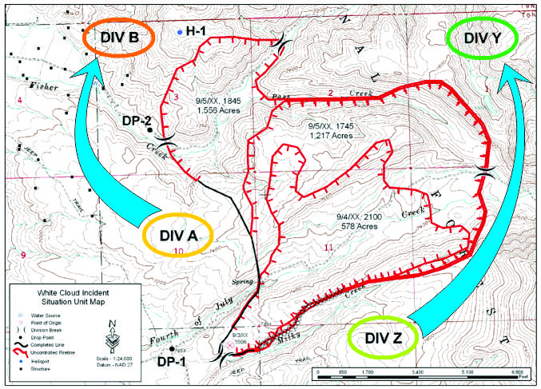

This appendix discusses questions that are frequently asked but not covered by the Field Operations Guide.
There is no hard and fast rule when it comes to the start and end of Division naming. One can start with Division Alpha and end with Division Golf.
The style of naming the last Division as Zulu came from the US Forest Service, where establishing Division boundaries would allow them to expand or add Divisions to the area clockwise starting with Alpha going to Zulu, and counter-clockwise starting with Zulu going to Alpha, as shown in the image below.
